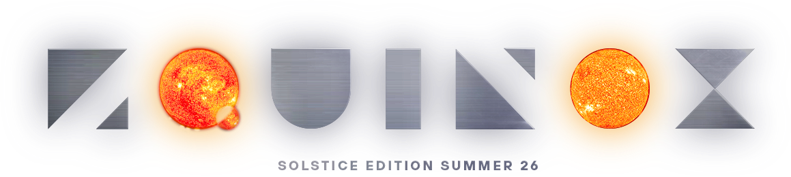

¿Qué es Equinox?
Equinox es el hackathon de 24 horas del CDO de Telefónica. Llevamos casi 10 años celebrándolo dos veces al año: una cita para juntarnos, experimentar sin miedo y convertir ideas en prototipos reales en una sola jornada intensa.

25 y 26 de junio de 2026 · Distrito Telefónica, Madrid & Online
El hackathon de 24 horas del CDO de Telefónica. 24 horas para construir, romper y volver a construir.
Las inscripciones se cierran el 23 de junio a las 23:00 h
Equinox es el hackathon de 24 horas del CDO de Telefónica. Llevamos casi 10 años celebrándolo dos veces al año: una cita para juntarnos, experimentar sin miedo y convertir ideas en prototipos reales en una sola jornada intensa.
Lo que se te ocurra: inteligencia artificial, agentes, ciberseguridad, herramientas internas, automatizaciones, mejoras de productividad… Si aporta valor y cabe en 24 horas, tiene su sitio en Equinox.
Cualquier persona del CDO de Telefónica con ganas de construir. Puedes presentarte de forma individual o en equipos de hasta 5 personas. No necesitas ser una persona experta: necesitas curiosidad.
En el Distrito Telefónica de Madrid —en el XDLab y en Universitas— y también en remoto, para que nadie se quede fuera. La presentación y la entrega de premios serán en Universitas.
La agenda podrá ajustarse según el número de participantes.
Si hubiera que limitar el aforo, las plazas se asignarán por orden de inscripción.
El proyecto elegido por el jurado. Lo mejor de lo mejor.
El favorito por votación pública de todos los participantes.
El mejor proyecto de inteligencia artificial.
El mejor proyecto de ciberseguridad.
El proyecto que mejor mejora la experiencia de desarrollo, la productividad o las métricas.
El mejor proyecto basado en agentes.
Construir, romper
y volver a construir.
… y vuelta a empezar.
01Registro
Rellena el formulario de inscripción. Te llevará un minuto y reservarás tu plaza.
Ir al formularioEl plazo se cierra el 23 de junio a las 23:00 h. No lo dejes para el último momento.
Si hubiera que limitar el aforo, las plazas se asignarán por orden de inscripción. Cuanto antes te apuntes, mejor.
02Equipos
Hasta 5 personas por equipo. También puedes participar en solitario si lo prefieres.
¡Claro! Apúntate igualmente: te ayudamos a encontrar equipo durante el evento para que nadie se quede sin construir.
03Proyectos y entregas
Cualquier idea que aporte valor: IA, agentes, ciberseguridad, herramientas de productividad, automatizaciones… Lo importante es que esté construida durante el hackathon.
Recibirás las instrucciones de entrega al inicio del evento, junto con el canal donde subir tu proyecto.
El cierre de entregas es el 26 de junio a las 10:30. Después, ¡a presentar!
Cada equipo dispone de 5 minutos para enseñar su proyecto al jurado y al resto de participantes.
04Logística
Tu portátil, cargador y muchas ganas. Si vienes presencialmente, no te olvides de tu acreditación para el Distrito Telefónica.
Sí. Habrá networking y pizzas 🍕 la tarde del 25, además de avituallamiento para aguantar las 24 horas a pleno rendimiento.